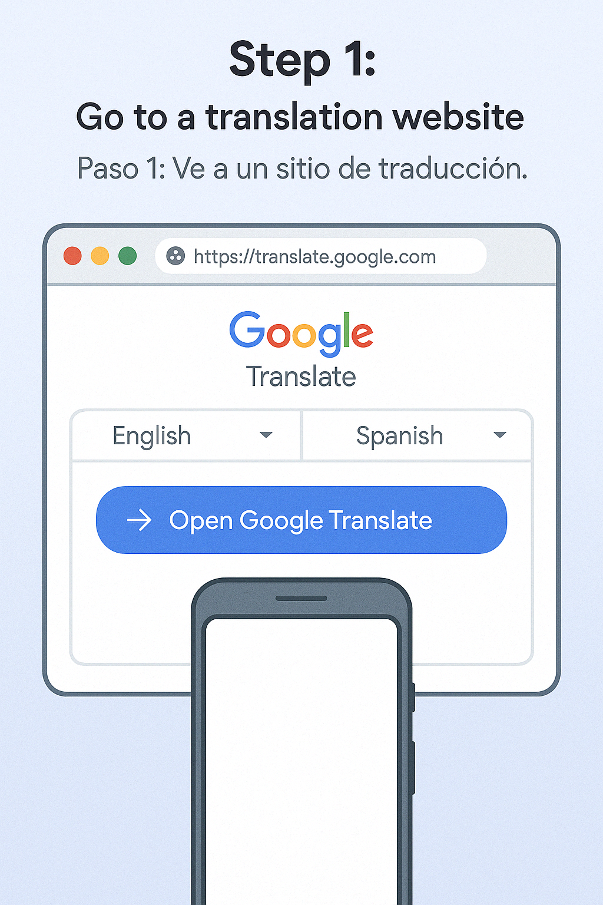
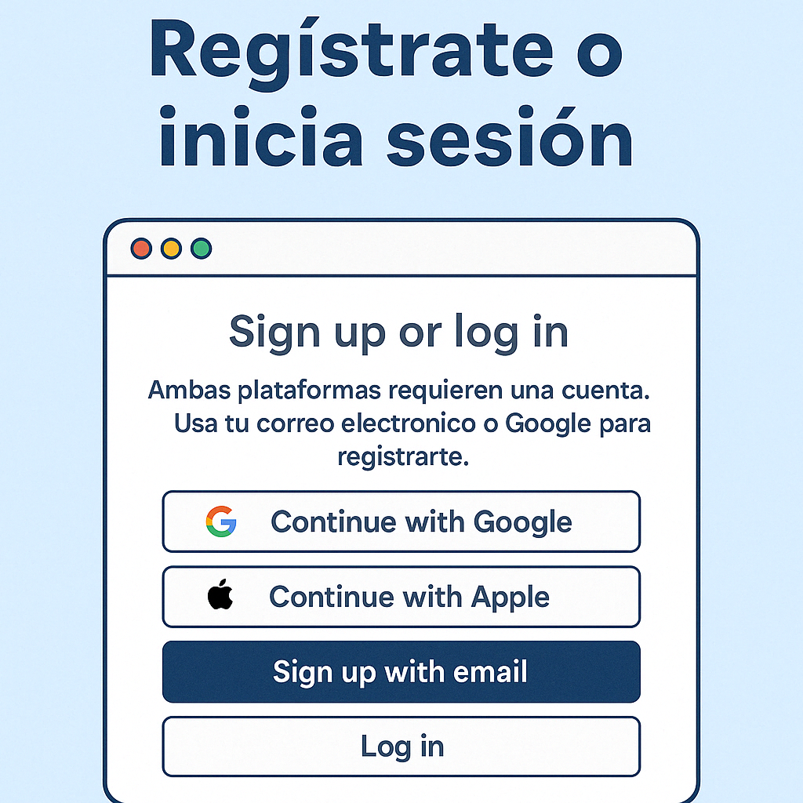
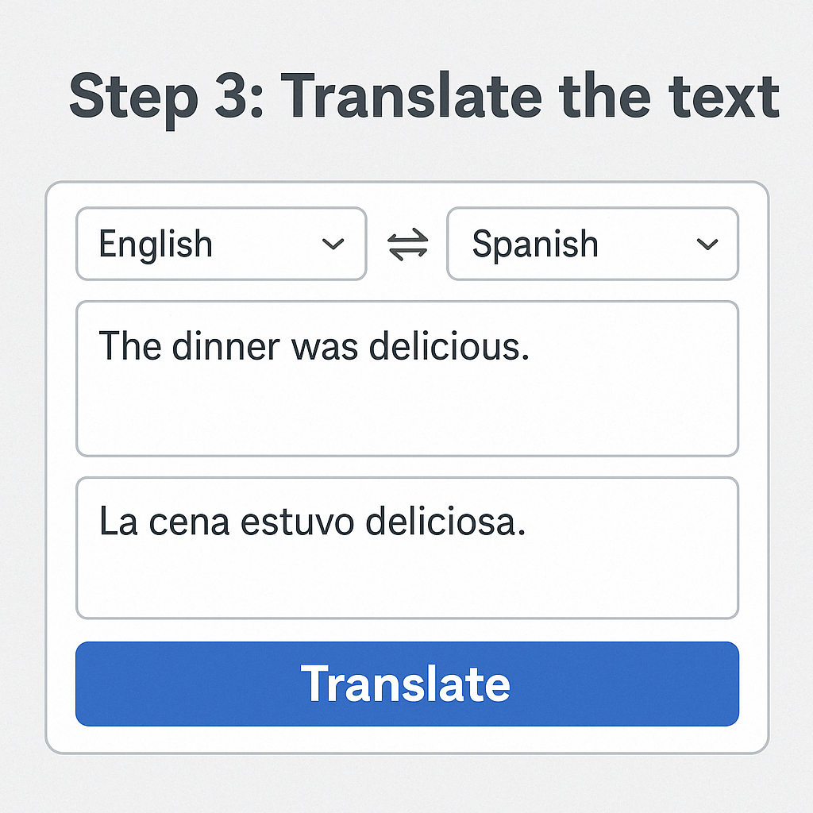
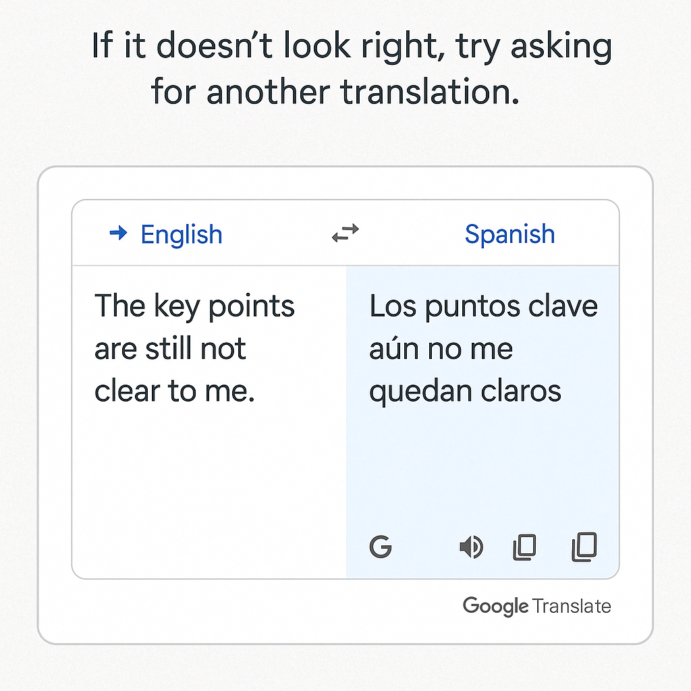
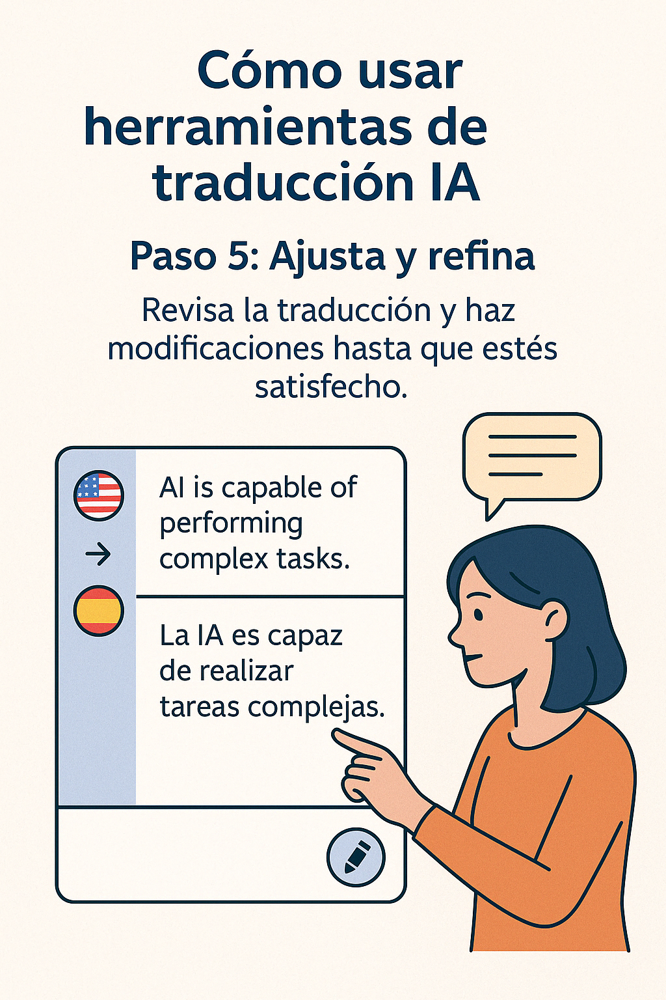

🌍 How to Use Translation Tools
Translation tools like Google Translate or DeepL help parents and students understand notes, emails, homework, and classroom instructions — even if English isn't their first language.
📋 Step-by-Step Guide
Step 1: Go to a translation website
Paso 1: Ve a un sitio de traducción
Open Google Translate or DeepL on your phone or computer.
Step 2: Select your languages
Paso 2: Selecciona tus idiomas
Choose the original language (like English) and the language you understand (like Spanish).
Step 3: Paste or type the text
Paso 3: Escribe o pega el texto
Copy homework instructions or emails and paste them into the box — the tool will translate it instantly.
Step 4: Use the audio or copy button
Paso 4: Usa el botón de audio o copiar
You can listen to the translation or copy it to send or save.
Step 5: Try translating documents or images
Paso 5: Prueba traducir documentos o imágenes
DeepL and Google Translate also let you upload files or photos of homework and translate them too.
🔗 Recommended Tools
Google Translate
translate.google.com
Supports text, websites, voice, and camera images in over 100 languages.
DeepL Translator
deepl.com
Known for accurate and natural translations in English, Spanish, and more.